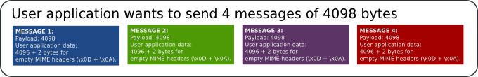
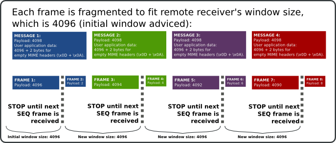

![[VORTEX SLOGAN]](vortex-slogan.png)
BEEP tiny fragment (BTF): problem description and how to fix it
Motivation
The article describes a problem which arises with bulk transfer (i.e. large files), that are segmented into messages slightly bigger than receiver's window size that causes a pathological interaction between the BEEP framing mechanism and the interaction between TCP Nagle's algorithm and TCP Delayed ACK, causing a performance throughput degradation which is stable in the time until the message size changes.
How BTF arises
Let's suppose the scenario where a BEEP peer wants to send a set of equally sized messages. Let's say that each message has 4098 bytes of useful content:
In the case the remote BEEP peer have a window size of at least 4098 (and following SEQ frames issued have the same size), the send operation involving 4 messages are translated into 4 frames (1:1 mapping). In this case, performance and transfer rates are OPTIMAL and no relevant delay is found.
Now, let's suppose the same scenario with one modification: messages to be sent (4098 bytes) are slightly bigger than current advised receiver's window size (4096 bytes).
In the case the remote BEEP peer has a smaller window size than message to be sent, let's say, 1 or 2 bytes less, the current BEEP stack must fragment content as follow:
As the reader could observe, because the BEEP stack finds the remote receiver's window can't hold the entire message, it has to split the message into an initial frame (4096 bytes) and, once received the next SEQ frame, it sends the rest of message (2 bytes). NOTE: that the boundaries where split occur aren't relevant (i.e 4096), if the message is splitted into frames of 512 bytes, and the ending frame contains 2 bytes, the same problem will arise.
As the send operation evolves, this pattern keeps stable, forcing each frame to be partially sent with a bigger one (with most of the content) followed by a tiny BEEP frame containing the rest of the message (in our case 2 bytes).
This "tiny BEEP frame" causes at the TCP layer to activate the Nagle's algorithm [4] as a countermeasure to avoid SWS [6], storing the content rather sending it directly, causing not only to delay this frame but next one. At the receiver's TCP stack, the TCP delay ACK algorithm will complement this "wrong interaction" (closing the circle) introducing ACK delays that makes the Nagle's algorithm at the sending side to retain the small frame until the receiver's TCK delay ACK timeout is reached.
How BTF degrades throughput
At initial approach to the problem could give the impression the performance penalty won't be bigger (as much as doing additional sending round trips for the tiny BEEP fragments); however this is not the case.
Experiments shows a great performance penalty. We are talking about degrading a BEEP channel that is able to process 8192 operations in a couple of seconds into only process 10 operations in the same amount of time.
Here are the points that explain it:
- TCP Nagle's with TCP Delayed ACK interaction:
The most important reason behind delays introduced at the pattern described seems to be the interaction between Nagle's algorithm and TCP Delayed ACK.
On this document([5]) we find that Nagle's algorithm interact with TCP delayed ACK in a way that two writes followed by one read causes delays that could be up to 500 ms (our experiments only shows delays of 40 ms on each message sent). This is interesting because pattern described where BTF arises implements two writes: a tiny frame followed by a big incomplete frame for the next message and then a wait to read a SEQ frame to continue with the transfer.
Because the BEEP framing mechanism produces in a continuous manner a pair of frames for each message to be sent (big (4094 bytes) followed by small frame (2 bytes)), this activates problem described at [5] with great probabilities than a plain TCP connection where no framing mechanism is running on top of it (BEEP).
-
The amount of frames to be sent is twice (for the same application level information):
For our case, sending 30MB (31457280 bytes), in messages of 4098 bytes, with a window size of 4096, will cause to send 15352 frames, in a stable series of small frame, followed by a big frame (next message).
In a scenario where the same amount of information is sent, but in messages of 4096 bytes (or 4098 with a stable remote window available of 4098), will cause to send roughly 7680 frames.
Additionally, the side effect is that producing twice of frames for the same information also involves twice of read operations at the remote side.
- Frames produced requires "additional" work
to be processed (at both sides):
Because the message to be sent is bigger than available window size, half of the frames produced are flagged as incomplete (more flag activated). The other half is the set of tiny fragments that completes its preceding frame.
At the sending BEEP peer, this requires a partial send operation, and to always queue the rest of the message. That is, it is required a queue operation for each message to be sent because it never fit into the receiver's window size. It also activates splitting code which involves an additional logic and memory operations not required for complete frames. All this "extra" work makes the sending BEEP peer to quickly enter into a trashing state where it spends more time splitting and queueing than actually send.
At the receiving BEEP peer, this requires additional work to process frames received. Because half of frames received are never complete, it usually requires to store them as pending to be completed, and an additional joining operation once the tiny fragment is received.
It is worth to mention that a frame read operation is an expensive operation. The amount of work required to move a BEEP engine to read a frame of useful content of 4096 is the same as 2 bytes.
Analysis of solutions
Initial work to propose a solution was focused to improve memory handling and efficiency at the process of reading/writing fragmented frames. Soon it was found that even having interesting improvement, no effect was found: a great delay was still found with the transfer test (30MB).
Later, some interesting results were found if the message size used was aligned with the receiver's window size. That is, assuming a default window size of 4096 bytes, if the sending application performs the transfer of the file using chunks of 4096, 2048, 1024 or 512, an strong improvement was found (being 4096 the most effective transfer size).
This moved us to think that there was a bug buried inside the Vortex [7] engine code, causing this unacceptable delay for frame sizes that produces an ending frame of really small content (2 up to 150 bytes), that is, splitting sizes not aligned with remote receiver's window size.
No debugging and profiling tool was able spot the cause of the problem. The results found from these tools were that there was no delay at all.
From this confusing results, we started to measure times between each write/read at both sides. Surprisingly, we found no delay was produced by the Vortex engine; however data sent was "delayed at some place", inside OS TCP send implementation.
With some investigation we found that disabling Nagle's algorithm (setsockopt TCP_NODELAY option [8]) fixes the problem, making all transfers done with different message splitting sizes to keep under reasonable values.
Later we found that a similar issue was found with the X window System (as pointed at [4]) and a detailed description that exactly describes our problem at [5].
Conclusion
We have seen how the interaction between Nagle's algorithm and the TCP delayed ACK algorithm produced bad transfer rates, that are easily activated by the BEEP framing mechanism.
From these results we can conclude that:
- Having Nagle's algorithm activated by default, makes the BEEP
stack to not produces proper results. The main explanation for this
poor interaction is that there is a flow control mechanism inside BEEP
(SEQ frame) that causes the application level to not send more frames
until a SEQ frame is received.
These "application level sending stops" makes more likely to activate the problem described at [5] than the situation where the application level can send the same set of data without "waiting" on each message sent (wait caused by waiting for SEQ frames to continue with the transfer).
To corroborate this, it was tested to perform the same transfer test with the values that trigger the problem (message size: 4098, message splitting size: 4096) but having the receiver with a window size of 8192 and no delay was found.
So, we can conclude it is recommended to disable Nagle's algorithm.
- Producing/pushing BEEP messages to be sent without considering its
interaction with BEEP framing mechanism could make the BEEP stack to
produce and process twice of frames, to send the same amount of effective
information.
For this, it is recommended that BEEP stacks should provide some sort of API that allows to get remote receiver's window size so the implementer can use this value to produce messages that are smaller and aligned with this value to avoid message fragmentation and, if the fragmentation happens, to avoid producing small content frames.
In the other hand, it is recommended that BEEP stacks updates window sizes with values aligned with values already advised. That is, having advised an initial value of 4096 bytes, it is recommended to use the same value for following updates or values aligned to it such 8192, 12288 (1024 bytes x N >= 4). This will implement a predictable behavior that helps to improve bulk transfer.
References
[2] BEEP Core definition, RFC 3080
[3] Mapping BEEP onto TCP, RFC 3081
[5] Nagle's algorithm interaction with Delayed ACK